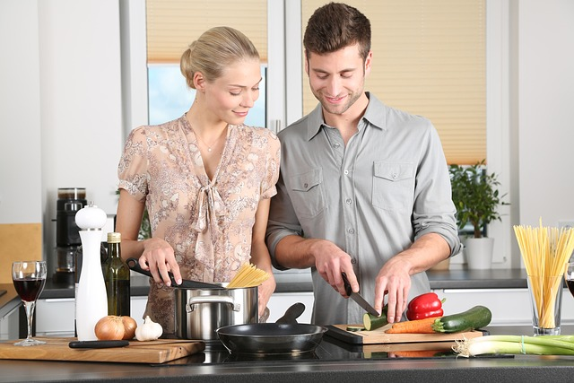

Pues en la cocina crack. Este es un espacio o lugar especialmente equipado y preparado para la preparación de comidas o alimentos.1 Una cocina moderna incluye como mínimo una cocina (con quemadores), un fregadero y el frigorífico y los muebles para almacén, los tres vértices del triángulo de trabajo que se ha de respetar para poder trabajar cómodamente en la cocina. La encimera es la superficie de trabajo en la cocina está hecha normalmente de materiales noble como el mármol, la madera o la pizarra, en la actualidad están también de moda materiales sintéticos de gran resistencia y que facilitan el mantenimiento y la limpieza en la cocina.
